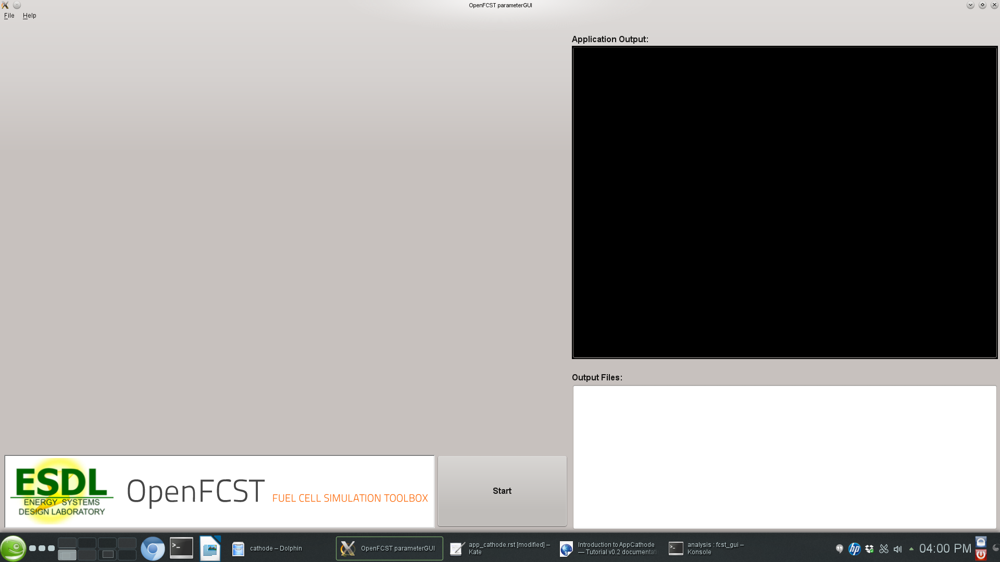

AppOhmic is an openFCST application whcih is used to study the electron transport in porous media. The electron transport governed by Ohm’s law is solved in the phase of interest using the FEM formulation of the weak-form of the equation. The application returns the total electronic flux (current) at the outlet face which can then be used to the calculate the effective conductivity of the media.
The governing equation is
The governing equation in the weak form is linear and can be solved directly using a linear solver like UMFPACK or GMRES.
The solution variable is the electronic potential, .
The ohmic directory consists of the following folders:
1. template : This folder contains the default files for running all the examples in the other folders. Please do not modify this file as it will result in all tests failing. If you would like to create your own example either include this file to your simulation using the include command or copy the file to a different location.
2. analysis : This folder contains the main_test.prm and data_test.prm files needed to run a simulation to obtain the electronic potential distribution in the porous media. Note the data file includes the template find and adds the necessary modifications. The script to run a test to make sure that the application and the equation class is running correctly is in the folder regression together with the default data the test is compared to.
In order to run OpenFCST, two files are needed that provide the necessary information for OpenFCST to execute: a. A main file: This file is used to select the appropriate: a) application; b) problem definition: (linear in this case); c) data file name; and, d) several less critical parameters. b. A data file: This file is used to input all the input data used for the simulation for the application selected.
Both these files can either be loaded and modified via the openFCST graphical user interface (GUI) or modified as a text file.
If you are using the OpenFCST GUI, you will need to load the .xml files. You can generate an .xml file from a .prm file by calling openFCST as follows:
$ openFCST-3d -c main.prm
openFCST will directly parse the main.prm and the associated data and file (if specified in the main.prm file).
If you would like to use the GUI, first launch the GUI by going to Install/bin and typing:
$ ./fcst-gui
Then, select the OpenFCST executable file that you would like the GUI to run, mainly openFCST-2d or openFCST-3d from the /Install/bin folder. Once this has been selected, the following screen will appear
At this point, you can load your main.xml and data.xml files. Go to File> Open Project... and select the main.xml and data.xml files. If you are planning on running an optimization simulation, then also load the opt.xml file, otherwise select No to loading a new simulation.
Once main.xml and data.xml files are loaded, the following will appear in the GUI,
At this point, you have several folders. Each folder contains options that you can modify. You can open each folder and, by hovering over the variable with your mouse, a text window will appear that explains the use of each input parameter. In our case, simulation name specifies that you are going to run AppOhmic. Simulator specification is only used for fluid applications, so it is not used here. Solver name specifies if the problem is linear or nonlinear and in the case of a nonlinear problem, the nonlinear solver to be used is selected. Solver method allows the user to use adaptive refinement and global refinement options so that the solution is refined during the solution. Analysis type is used to specify if you would simply like to run one simulation, obtain a polarization curve, perform a parameteric study or run an optimization study. For this application only the analysis mode is available.
To modify simulation data, go to the next tab, i.e. data.xml. The following screen will appear:
In this screen, you can select the most suitable options to run your simulation. The most important folders are: a. Grid Generation: Specify the mesh you would like to use. You can either read a mesh from file (Type of mesh>External mesh) or have openFCST create the geometry. In this case we use cathode. b. LinearApplication: Specify the linear solver and options to solve the linearized problem. c. Equations: Specify the equations you would like to solve, the initial solution and boundary condition values. d. Fuel Cell Data: Specify the layer properties. e. Output
Once your parameters are set, simply press the Run button to launch the simulation. The ouput will be shown in the black screen to the right. The files in the directory also appear in the bottom right corner. Configure Paraview to open the .vtu files to analyze the output.
If instead of using the GUI, you would like to look at the files using a text editor, the .prm files are move convenient. As discussed, the main.prm file is the argument file supplied to the OpenFCST executable. The main.prm file should look like this:
######################################################################
# $Id: main.prm 2011-02-09 secanell $
#
# This file is used to simulate app_diffusion and obtain a
# a concentration profile
#
#
# Copyright (C) 2011 by Marc Secanell
#
######################################################################
subsection Simulator
set simulator name = ohmic
set simulator parameter file name = data.prm
set solver name = Linear
set Analysis type = Analysis
end
The data.prm file for the cathode example is shown below:
######################################################################
# $Id: $
#
# This file is used to simulate app_diffusion and to obtain
# a concentration profile for the species through the domain
# This file will be called by the main.prm file.
#
# Copyright (C) 2011-13 by Marc Secanell
#
######################################################################
###############
subsection Grid generation
set Type of mesh = GridExternal # Cathode | CathodeMPL | GridExternal
set File name = test.vtk
set File type = vtk
set Initial refinement = 0
set Refinement = global #global | adaptive
set Sort Cuthill-McKee = false
set Sort by component = true
end
###############
subsection Initial Solution
set Read in initial solution from file = false
set Output initial solution = false
end
###############
###############
subsection Adaptive refinement
set Number of Refinements = 3
set Output intermediate solutions = false
set Output final solution = true
set Output intermediate responses = false
set Use nonlinear solver for linear problem = false
end
###############
###############
subsection System management
set Number of solution variables = 1
subsection Solution variables
set Solution variable 1 = electronic_electrical_potential
end
subsection Equations
set Equation 1 = Electron Transport Equation
end
end
###############
subsection Equations
subsection Electron Transport Equation
subsection Initial data
set electronic_electrical_potential = 0: 0.1 # where 0 indicates the material_id setup in the grid and 0.1 is the electronic potential in V
end
subsection Boundary data
set electronic_electrical_potential = 1: 0.4, 2:0.01 #where 1 & 2 denote the boundary ids and 0.4 and 0.01 are the electronic potentials in V at the respective boundary
end
end
end
###############
subsection Discretization
set Element = FESystem[FE_Q(1)] #FESystem[FE_Q(3)-FE_Q(1)^2] #FESystem[FE_Q(1)^3] #System of three fe
subsection Matrix
set Quadrature cell = -1
set Quadrature face = -1
end
subsection Residual
set Quadrature cell = -1
set Quadrature face = -1
end
end
###############
subsection Fuel cell data
####
subsection Operating conditions
set Temperature cell = 353 #[K]
set Cathode pressure = 101265 #[Pa] (1 atm)
set Cathode relative humidity = 0.6
end
####
####
subsection Cathode gas diffusion layer
set Gas diffusion layer type = DummyGDL #[ DesignFibrousGDL | DummyGDL | SGL24BA ]
set Material id = 0
####
subsection DummyGDL
set Oxygen diffusion coefficient, [cm^2/s] = 0.22
set Electrical conductivity, [S/cm] = 40
end
####
end
####
end
######################################################################
subsection Output Variables
set Compute boundary responses = true
set num_output_vars = 1
#set Output_var_0 = electronic_electrical_potential
end
######################################################################
subsection Output
subsection Data
set Output format = vtk
set Print solution = true
end
subsection Grid
set Format = eps
end
end
################################
################################
################################
################################
The key disadvantage of using the .prm file is that for the parameters that have options, it is not possible to see the option that are available, therefore the use of the GUI is strongly suggested for users.
{kind=link}
{kind=link}
{kind=link}